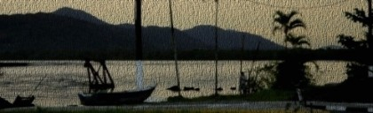

academia livre
Dissertação de Mestrado, 23 de maio de 2013
Aconteceu em 23 de maio, às 14hs, em Santos a defesa do trabalho de mestrado: "Apropriação Crítica de Tecnologias, Percepção Socioambiental e Petróleo, em Santos", de Maira Begalli
-----------
RESUMO
O presente trabalho analisou a percepção socioambiental de uma população local relacionada a apropriação crítica de tecnologias para o desenvolvimento de pesquisas livres sobre mitigação, análise de impactos advindos da indústria do petróleo e sustentabilidade da zona costeira do município de Santos. A coleta de dados foi realizada entre os meses de junho de 2012 e maio de 2013. Foram estabelecidos os seguintes critérios: 1)Avaliação dos Pontos de Cultura do município de Santos como espaços possíveis para sediar um laboratório experimental temporário; 2)Receptividade da população local com relação a proposta; 3) Reconhecimento da atividade e interesse em colaborar por parte de coletivos que já desenvolvem projetos sobre a temática abordada. Ao final da pesquisa foi possível concluir que os Pontos de Cultura Projeto Parcel e Estação da Cidadania e Cultura podem ser considerados espaços possíveis para sediar atividades de um laboratório experimental no município de Santos. Uma parcela da população da área continental de Santos, residente no bairro do Caruara, demonstrou interesse em participar de atividades envolvendo a apropriação crítica de tecnologias para o manejo socioambiental da região. Relataram um censo crítico bastante apurado quanto ao desenvolvimento que a indústria do petróleo poderá trazer para região: muitos impactos ambientais em contraponto as oportunidades de emprego e lucros. A documentação das atividades realizadas possibilitou que a proposta fosse difundida e replicada para outros coletivos que atuam projetos correlatos em outros países. Assim, é possível considerar que o desenvolvimento de propostas experimentais pode proporcionar a realização de ações socioambientais livres no município de Santos, ou seja, promover ações que incorporem a apropriação crítica de tecnologias ao conhecimento ecológico da população local como forma de empoderamento em relação aos impactos que a indústria do petróleo tende a trazer para a região.
palavras-chave: apropriação crítica de tecnologias, percepção socioambiental, laboratórios experimentais, petróleo, Santos.
baixe aqui o pdf da dissertação
baixe aqui o pdf da apresentação
---
Como citar:
BEGALLI, M. 2013. Apropriação Crítica de Tecnologias, Percepção Socioambiental e Petróleo em Santos, São Paulo. Dissertação de Mestrado apresentada ao Programa de Pós-Graduação em Sustentabilidade de Sistemas Marinhos e Costeiros, 97p.
Localização
- 1609 leituras
Papers
- BEGALLI, M. . A História da Ciência Revisitada: Os cientistas do faça você mesmo. Revista Ágora (Vitória), v. 15, p. 210-212, 2012.
- BRUNET, K. ; BEGALLI, M. ; FLEISHMAN, L. . Arte, Experimentações Tecnológicas e Natureza: Processos, Produtos e Espaços de Criação. In: VI Simpósio Nacional da Associação Brasileira de Pesquisadores em Cibercultura (ABCiber), 2012, Novo Hamburgo. Anais do VI Simpósio Nacional da ABCiber. Novo Hamburgo: Feevale, 2012.
- BEGALLI, M. ; RAMIRES, M. ; MORAES, A. P. ; PRADO, C. P. ; NASCIMENTO, L. ; ROJAS, E. ; MELLO, A. ; BARRRELLA, W. ; CLAUZET, M. . Caracterização Socioambiental do bairro Caruara, Santos-SP. 2012. (Apresentação de Trabalho/Simpósio).
- BEGALLI, M. ; RAMIRES, M. ; CABRAL, F. ; FLEISHMAN, L. ; BRUNET, K. ; CLAUZET, M. . Avaliação do potencial de desenvolvimento de futuros laboratórios experimentais como células de co-manejo nos Pontos de Cultura do município de Santos-SP. 2012. (Apresentação de Trabalho/Simpósio).
- BEGALLI, M. ; RAMIRES, M. ; CLAUZET, M. . Avaliação do Potencial de desenvolvimento de Futuros Laboratórios Experimentais como células de co-manejo nos Pontos de Cultura do Muncicípio de Santos-SP. Revista LABVERDE, v. 1, p. 144-158, 2013. (*versão completa do trabalho que foi apresentada no simpósio acima)
- BEGALLI, M.; WANDERLEY, A. Ciência Serena. IN: Submidialogias 3: Peixe Morto.i-Motirõ: Rio de Janeiro, p. 13-14.
- BEGALLI, M. Avaliação do Potencial de desenvolvimento de um laboratório experimental destinado à práticas DIYBIO e pesquisas sobre ostras no entorno da estação ecológica Juréia-Itatins - SP, Brasil. IX Enecult: Salvador: Bahia, 2013 (Apresentação de trabalho).
- BEGALLI, M. Next Nature: a natureza como uma experiência humana. Santos, 2012.
- BEGALLI, M. As trocas ecológico-econômicas e a sociedade contemporânea sob a perspectiva de Howard T. Odum. Santos, 2012.
- BEGALLI, M. Petróleo: destruição e criação, valores e desejos. Santos, 2012.
BEGALLI, M. 2013. Apropriação Crítica de Tecnologias, Percepção Socioambiental e Petróleo em Santos, São Paulo. Dissertação de Mestrado apresentada ao Programa de Pós-Graduação em Sustentabilidade de Sistemas Marinhos e Costeiros, 97p.
- 3715 leituras
deriva//lab

deriva//lab é um ConecTAZ que aborda a questão de apropriação crítica de tecnologias e conhecimento ecológico local com ênfase na perspectiva na sustentabilidade das áreas costeiras do município de Santos, relacionada aos impactos causados pela exploração de petróleo na região.
deriva//lab é um laboratório experimental itinerante, autonômo e temporário, que utiliza tecnologias e conhecimentos livres para o desenvolvimento de pesquisas DIYBio voltadas para o manejo socioambiental colaborativo.O objetivo é possibilitar o intercâmbio de iniciativas experimentais, que poderão ser desenvolvidas, propagadas, apropriadadas e replicadas em outros centros de pesquisas (acadêmicos ou não) e laboratórios experimentais do país e do mundo.
As primeiras atividades foram realizadas entre 29 a 30 de setembro de 2012, no Ponto de Cultura Projeto Parcel, no bairro do Caruara, em Santos (área continental).
Os usos e atribuições de qualquer conteúdo do deriva//lab estão sob essa licença.
Seja bem vindx!
Localização
- 4464 leituras
Comentários recentes
1 ano 31 semanas atrás
2 anos 5 dias atrás
2 anos 2 semanas atrás
2 anos 16 semanas atrás
2 anos 16 semanas atrás
2 anos 18 semanas atrás
2 anos 19 semanas atrás
2 anos 19 semanas atrás
2 anos 19 semanas atrás
2 anos 19 semanas atrás